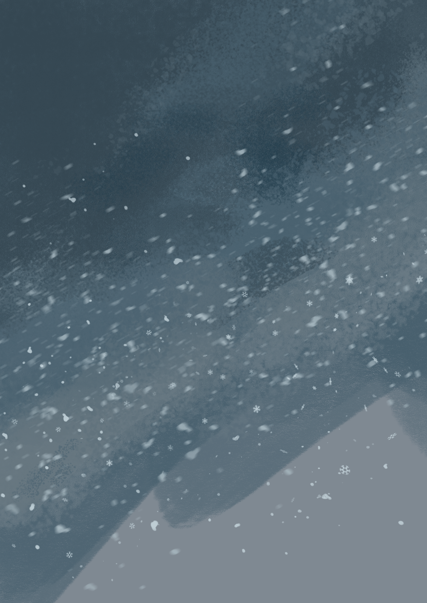
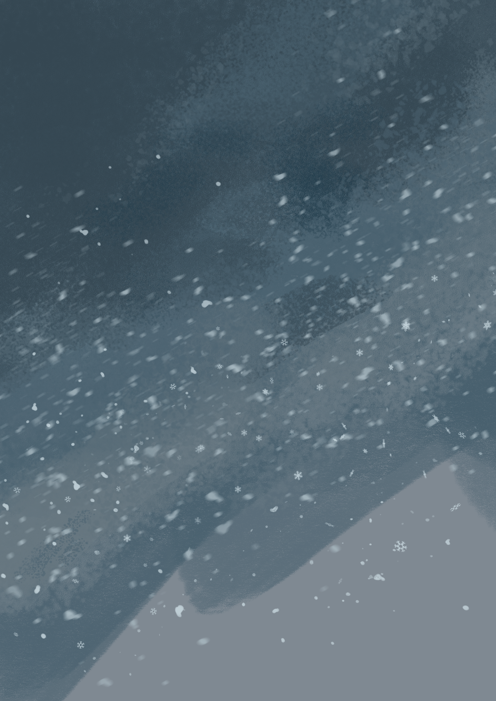

-->

-->

Cher Madame, Monsieur,
Digitalcity a particulièrement éveillé mon attention. Vous offrez de
nouvelles perspectives d'avenirs aux demandeurs d'emplois passionnés
par la technologie et l'informatique.
Avoir un meilleur avenir, c'est pourquoi par l’intermédiaire de
cette lettre ainsi que ce site web, je souhaite vous soumettre mon
profil et vous exprimer toute ma motivation à intégrer votre école.
Ayant travaillé en tant que jardinier, magasinier, serveur,
brancardier et aide logistique aux urgences pédiatrique.
Aujourd'hui je suis papa d'une merveilleuse petite fille. D'où
l'importance aussi bien pour elle que pour moi, d'avoir comme
passion mon métier.
Durant ces dernières années, j'ai pu acquérir de solides
connaissances en illustration digitale en tant qu’autodidacte. Cette
passion, j'aimerais la partager et l'intégrer à la conception de
site web.
Le développement est un apprentissage sans fin, il faut être persévérant et motiver tout comme en illustration. Ainsi, développer de nouvelles connaissances au sein d'un environnement aussi dynamique et stimulant qu'est Digitalcity, est important pour moi.
En espérant vous avoir convaincu de ma motivation. Je vous remercie d'avance pour votre bienveillance ainsi que le temps que vous m'accordez et je vous prie de bien vouloir agréer, Madame, Monsieur, mes plus cordiales salutations.